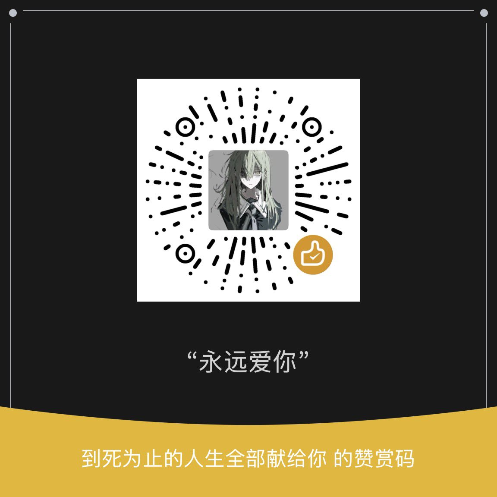

ee
@seeFvn
RT @Satoukawaii0514: 我是猫猫 十月起家里停我的房租和生活费
六月搬到广州工作第一个月家政2500 第二个月开始诸事不顺 一直在找工作 失业 找工作 现在还在找工作
我的情况是十八岁家里人拉我去经营贷 现在每次到还贷的时候都要骂我一顿才给我还贷款 一个月生…

流泪猫猫头
@Satoukawaii0514
我是猫猫 十月起家里停我的房租和生活费
六月搬到广州工作第一个月家政2500 第二个月开始诸事不顺 一直在找工作 失业 找工作 现在还在找工作
我的情况是十八岁家里人拉我去经营贷 现在每次到还贷的时候都要骂我一顿才给我还贷款 一个月生活费1200
请帮帮我吧 谢谢你们 我需要钱 我现在真的好绝望 🚪30 https://t.co/ZMrV4t2pR8